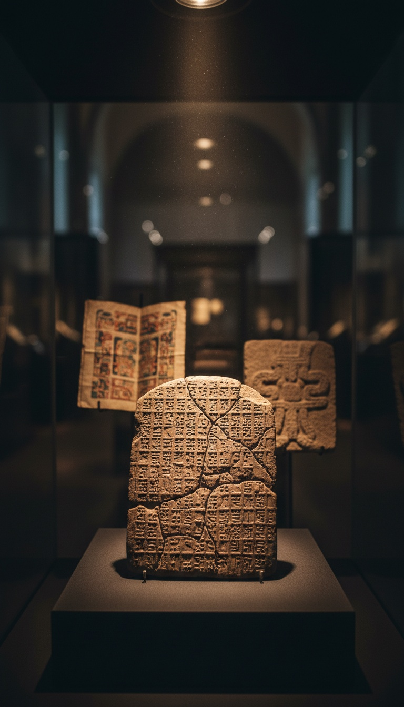

Four ancient civilizations sat down, watched the sky, and arrived at the same catastrophe number. They never met.
Sumer to the Hopi mesas of Arizona is 11,000 miles of ocean, desert, and ice. Babylon to the Maya lowlands is 7,500 miles. The Ganges to Third Mesa is farther still. There was no trade route, no shared script, no common priesthood. And yet the clay tablets of Nineveh, the codices of the Maya, the Sanskrit epics of India, and a petroglyph carved into Arizona sandstone all track the same interval. A cycle of destruction, measured, encoded, and left behind as a warning. The number is 3,600 years. Every one of these receipts is sitting in a museum or on a mesa you can visit today.

The Number Baked Into Babylonian Clay
The Sumerians had a dedicated word for 3,600. They called it the šár, and it was the capstone of their base-60 mathematics. It appears across the astronomical tablets of the MUL.APIN series, held in the British Museum in London, recovered from the library of Ashurbanipal at Nineveh. The same libraries preserved the Enuma Elish creation tablets, which describe a celestial body crossing into the inner system and reordering the planets. The Sumerians did not treat 3,600 as an abstraction. They treated it as a unit of cosmic time.
The Weld-Blundell Prism, catalogued as W-B 444 in the Ashmolean Museum at Oxford, records the Sumerian King List. The antediluvian kings on that prism reign in exact multiples of the šár. Alulim of Eridu rules 28,800 years, which is eight šárs. En-men-lu-ana rules 43,200 years, which is twelve. Then the list says the Flood swept over the land, and afterward the reigns collapse to human lengths. The scribes marked the catastrophe as the boundary between šár-time and man-time.
The Priest Who Put It in Writing
Around 290 BCE, a priest of Marduk named Berossus left Babylon, settled on the island of Kos, and wrote the Babyloniaca in Greek. He was translating temple archives that he claimed stretched back over 400,000 years. His work survives in fragments quoted by Josephus, Eusebius, and Syncellus, and those fragments preserve his central claim: the world is periodically destroyed, by flood and by fire, when the planets return to specific alignments.
Berossus was not a fringe figure. He founded a school of astronomy on Kos, Pliny the Elder credits him by name in Natural History, and the Athenians raised a statue to him. A credentialed Babylonian insider with archive access told the Greek world, in writing, that destruction runs on a planetary schedule. The Greeks took him seriously enough to carve his face in stone.
The Same Clock, Written in Sanskrit
The Vedic tradition runs time through the Yuga cycle, laid out in the Manusmriti and Book 12 of the Mahabharata. The system is built on the divine year of 360 human years, and its core units resolve into multiples of 3,600. Ten divine years is 3,600 human years. The texts describe each cycle ending in dissolution, a civilizational reset called pralaya, before the wheel starts again.
Vedic astronomers were not guessing. The Surya Siddhanta computes the sidereal year to within minutes of the modern value, calculates planetary diameters, and predicts eclipses. A tradition with that level of observational precision chose to anchor its doomsday arithmetic on the same number the Sumerians named šár. Two priesthoods, two continents, one interval.
Four civilizations that never met wrote down the same expiration date.
The Maya Counted It in Days
The Maya Long Count runs on the baktun, a unit of 144,000 days. That is exactly 3,600 times 40. Thirteen baktuns make the Great Cycle of 5,125 years, the one that closed on December 21, 2012. The math is preserved in the Dresden Codex, held in the Saxon State Library in Dresden, Germany, whose eclipse tables still predict lunar eclipses accurately today.
Tortuguero Monument 6, excavated in Tabasco, Mexico, carries the only explicit inscription of the 13th baktun ending, tied to the descent of the god Bolon Yokte, a deity associated with war and creation events. The Maya did not pick their units casually. Their calendar was precise enough to track Venus to within two hours per 500 years. When a culture that exact builds 3,600 into the foundation of its largest time unit, that is a decision, not an accident.
The Warning Carved Into Arizona Sandstone
On Third Mesa near Oraibi, Arizona, stands Prophecy Rock, a Hopi petroglyph that maps the destruction of three previous worlds and the coming end of the fourth. Hopi elders, including Thomas Banyacya, who addressed the United Nations in 1992, describe the Great Purification as the close of a world-cycle, with the last reset marked by ice and flood. The tradition places the current cycle thousands of years deep and near its end.
The Hopi kept this record with no writing system, no telescopes, and no contact with any Old World culture. Oral tradition is the hardest data to fake, because it must survive every generation's scrutiny to be transmitted at all. The Hopi paid that transmission cost for millennia to keep one message alive: the world ends on a schedule, and the schedule is known.
The Crater That Does the Math
The counter-argument says 3,600 is just an artifact of Sumerian base-60 arithmetic, a round number that fell out of their counting system. That argument dies on geography. The Maya counted in base-20 and still built their master unit on 3,600 times 40. The Vedic system ran on decimal and divine years and landed on the same interval. The Hopi had no positional mathematics at all. Base-60 explains one culture. It cannot explain four.
Then the ground gave up a receipt. Around 12,800 years before present, the Younger Dryas began, a sudden planetary cold snap that killed the megafauna and coincides with the collapse of the Clovis culture. The 2018 discovery of the 31-kilometer Hiawatha crater under Greenland's ice, published in Science Advances, put a candidate impact on the table. Wendy Wolbach's 2018 study documented a platinum spike and continent-scale burning at the boundary layer, and melt-glass at Abu Hureyra in Syria shows temperatures above 2,200 degrees Celsius. At Gobekli Tepe in Turkey, Pillar 43, the Vulture Stone, was dated by engineers Sweatman and Tsikritsis in 2017 as a memorial to that exact event. Twelve thousand eight hundred divided by 3,600 puts us in the tail end of the cycle count. The ancients were not inventing a number. They were counting down from something they survived.
Run the arithmetic yourself. The last reset hit 12,800 years ago. The interval, recorded independently on four continents, is 3,600 years. That does not place the window ahead of us. It places us inside it. The Maya closed their count in 2012 and the Hopi elders say the Fourth World signs are already complete.
Four civilizations paid an enormous price to carry this number forward. Scribes baked it into clay, priests smuggled it into Greek, Brahmins chanted it across a hundred generations, and Hopi runners memorized it word for word in the Arizona desert. Nobody spends millennia preserving a random number. They preserved a countdown. So answer this in the comments: if the people who survived the last one went to that much trouble to warn us, what exactly do you think they saw coming?
Before you go
7 books the Vatican doesn't want you reading. Free PDF — the texts they cut, with sources. Joined by 140+ Inner Circle members.
No spam. Unsubscribe anytime.
Go deeper
The Hidden Canon, Vol. I — Enoch. Jubilees. Thomas. Mary. Judas. 90 pages, 14 chapters, every receipt cited. The books your Bible quietly removed.
Read the Canon →Books that informed this investigation
- The Sumerians (Kramer)
- Babylon: Mesopotamia and the Birth of Civilization (Kriwaczek)
- The Ancient Near East (Hallo & Simpson)
As an Amazon Associate, Hidden Epoch earns from qualifying purchases. Cost to you: nothing.
Research safely
The VPN we use to research without being tracked. First 3 months free.
Get NordVPN →